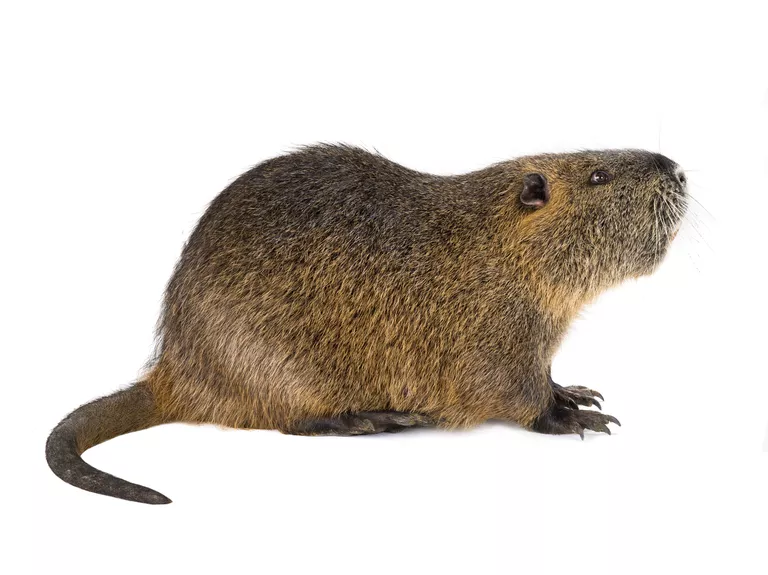
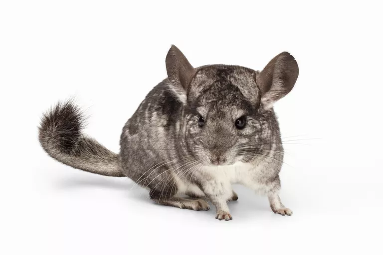
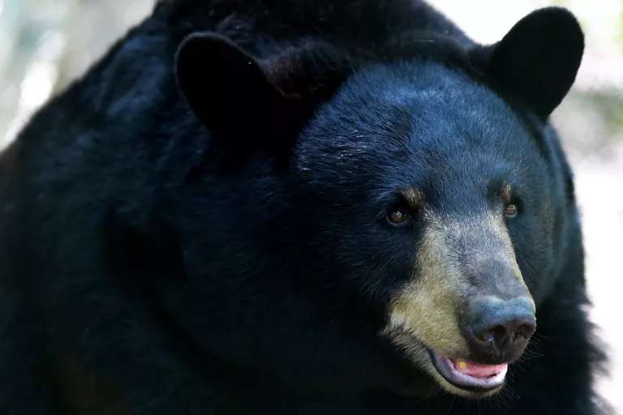

Mammals
Nutria

The nutria or coypu (Myocastor coypus) is a large, semi-aquatic rodent. It resembles the beaver and muskrat, but a nutria has a rounded tail, while a beaver has a paddle-shaped tail and a muskrat has a flattened ribbon-like tail. Beavers and nutrias have webbed back feet, while muskrats lack webbed feet. While once raised for their fur, nutrias have become a problematic invasive species.
Chinchilla

The chinchilla is a South American rodent that has been hunted to near-extinction for its luxurious, velvety fur. However, one species of chinchilla was bred in captivity starting at the end of the 19th century. Today, domesticated chinchillas are kept as playful, intelligent pets.
Florida Black Bear

Florida black bears are part of class Mammalia and are found throughout Florida, southern Georgia, and Alabama. Their scientific name, Ursus americanus floridanus, is derived from the Latin words meaning Florida American bear. They are a subspecies of the American black bear. In 1970, the Florida black bear population only numbered in the 100s. Their numbers have now rebounded to the 4,000s thanks to conservation efforts.
Bruno Sowa